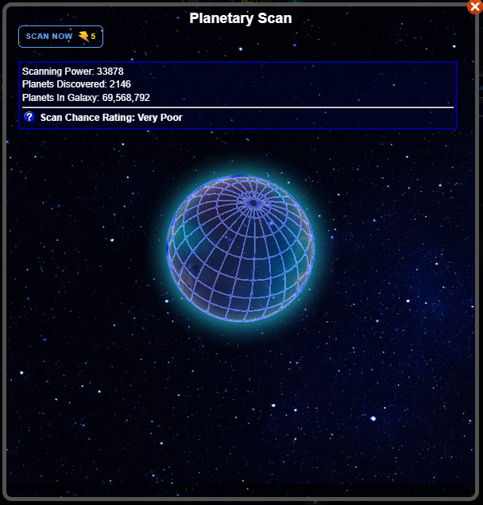
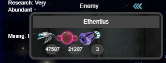

This tab displays the following:
The Scan Planets button
The planet that you are currently Guarding, if you are doing so
The various filters for planets, such as your planets or enemy planets
The planet text filter
The list of planets that currently match this filter
Icons on planets indicating the owner: you, a player in your Legion, or a player in another Legion
The planet quick action button, which allows you to quickly use probes or purgers on planets
Scan Planets Pop-Up
Clicking the "Scan New Planets" pop-up provides the scan button, and displays your scan stat, the number of planets you have on scan, the number of planets in the galaxy, your chance for a successful scan, and an image of the planet that you just scanned, or a blank planet image if you have not scanned
Planet Window
Clicking a planet displays the Planet window
Planet Quick Action
The quick action button displays a few artifacts that you can use without actually opening the planet